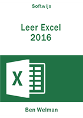

Voorwoord
Welkom bij dit online studieboek van Excel 2016.
Dit studieboek is bedoeld als een grondige kennismaking met Excel en om genoeg informatie te verstrekken over de mogelijkheden van Excel zodat lezers ze kunnen gebruiken.
Dit boek is geschreven voor
- studenten in het middelbaar en hoger onderwijs
- mensen in het bedrijfsleven die Excel gebruiken
Het boek verschilt op meerdere manieren van andere Excel studieboeken.
- Het is gratis en online, waardoor het voor een breed publiek toegankelijk is.
- De online versie wordt regelmatig bijgewerkt. Je hoeft niet tot de volgende editie te wachten tot fouten gecorrigeerd zijn of nieuwe onderwerpen (vooral voor gegevensanalyse) zijn toegevoegd.
- De onderdelen zijn ontwikkeld om te leren een bepaalde taak te kunnen uitvoeren en te beheersen, niet meer en niet minder. Dat heeft geresulteerd in concrete stapsgewijs opgebouwde taken zonder extra informatie die alleen maar voor afleiding kan zorgen. Elke taak heeft een titel welke begint met het woord Taak: zodat het duidelijk is dat iets uitgevoerd moet worden.
- Aan het einde van de meeste hoofdstukken staat een serie Opgaven. De titel van een opgave begint steeds met het woord Opgave: gevolgd door een unieke code en een korte omschrijving. Wanneer de opgave een eindantwoord heeft dan wordt deze vermeld.
- De inhoud van de taken en opgaven is vooral bepaald door competenties die het hoger onderwijs stelt. Veel van de opgaven zijn voortgekomen uit ervaringen van studenten in de beroepspraktijk tijdens stages en afstuderen.
Belangrijk: Bij dit studieboek horen hulpbestanden die je nodig hebt bij het
maken van de taken en de opgaven. Download deze via hulpbestanden.
Een digitale versie van het studieboek kan gekocht worden in PDF en EPUB formaat.
- PDF: geschikt voor het lezen op een pc/laptop en voor het maken van een papieren afdruk. De inhoud is doorzoekbaar en er kan in- en uitgezoomd worden.
- EPUB: geschikt voor het lezen op een pc/laptop, e-reader, ipad, tablet. Lettertype en -grootte kunnen aangepast worden (afhankelijk van het apparaat). De inhoud is doorzoekbaar.
Voor het aanschaffen van een PDF en EPUB klik op: .